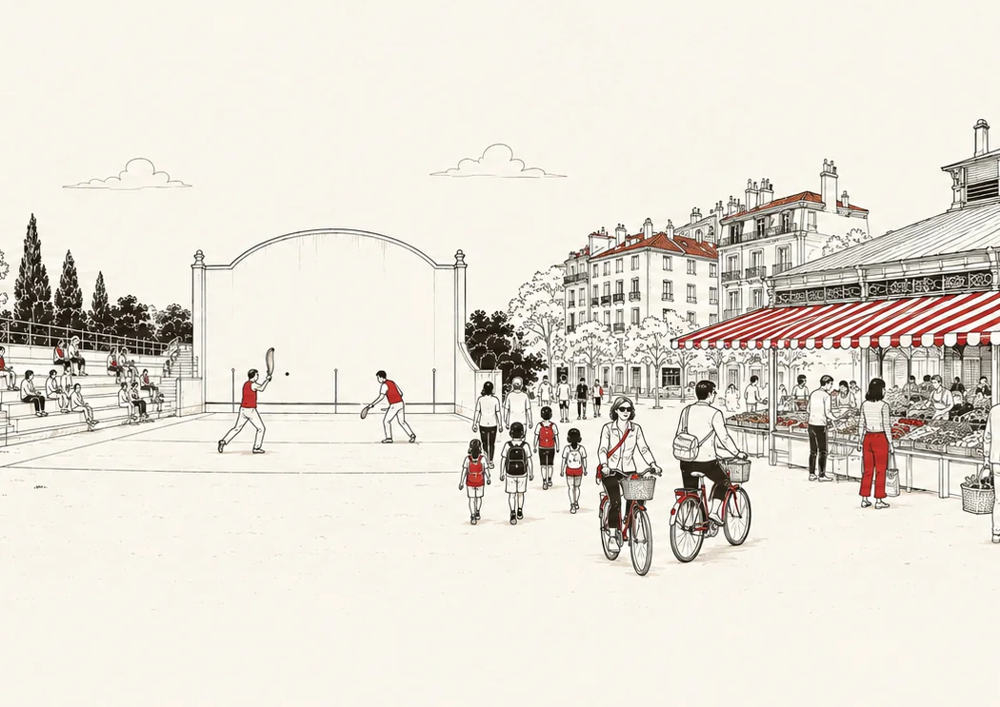

Vivir en Biarritz: lo que dicen las cifras
Antes de la cuestión del precio hay otra: ¿quiero vivir aquí? Esta página responde en cifras, todas públicas, con fuente y fecha.


Quién vive en Biarritz
Biarritz cuenta con 25.810 habitantes. La estructura por edades es la primera cifra que conocer: el 44,6 % de los biarrotas tiene 60 años o más (11.520 personas), y el 9,4 % tiene menos de 15 años (2.437 niños). Es el perfil de las grandes estaciones costeras, donde la gente se instala para quedarse: en Francia, los mayores de 60 representan el 27,0 % de la población, y los menores de 15 el 17,3 %.
| Indicador | Valor | Parte | Francia |
|---|---|---|---|
| Población | 25.810 | ||
| Menos de 15 años | 2.437 | 9,4 % | 17,3 % |
| 60 años y más | 11.520 | 44,6 % | 27,0 % |
Fuente: INSEE, censo de población 2022, bases infracomunales (IRIS). Partes de Francia calculadas sobre la misma base (Francia sin Mayotte).
Residencias principales, secundarias, vacías
Es la cifra emblemática de la ciudad: Biarritz tiene más viviendas que habitantes (26.387 viviendas para 25.810 habitantes). Las residencias secundarias y ocasionales representan el 40,7 % del parque, es decir 10.750 viviendas. Es ante todo una cifra de atractivo, y es la que explica gran parte de la tensión de los precios: en Francia, las residencias secundarias representan el 9,7 % del parque, más de cuatro veces menos. A la inversa, las viviendas vacías son raras: el 2,1 % del parque, frente al 8,0 % en Francia, señal de una ciudad donde una vivienda siempre encuentra comprador.
| Viviendas | Número | Parte | Francia |
|---|---|---|---|
| Conjunto del parque | 26.387 | ||
| Residencias principales | 15.078 | 57,1 % | 82,3 % |
| Residencias secundarias y ocasionales | 10.750 | 40,7 % | 9,7 % |
| Viviendas vacías | 560 | 2,1 % | 8,0 % |
| Apartamentos | 20.643 | 78,2 % | 44,1 % |
| Casas | 5.647 | 21,4 % | 54,8 % |
La media comunal esconde un gradiente muy claro: del simple al cuádruple entre el Centro Ciudad · Les Halles (61,5 %) y Lac Marion (16,8 %). Y dentro del propio Centro, el sector del frente de mar sube al 72,2 % de residencias secundarias. Barrio a barrio:
| Barrio | Habitantes | Viviendas | Res. secundarias |
|---|---|---|---|
| Centro Ciudad · Les HallesIRIS Front de Mer + Halles-Hurlague | 3.746 | 6.573 | 61,5 % |
| Bibi-BeaurivageIRIS République-Beau Rivage | 1.520 | 2.063 | 51,2 % |
| Barrio ImperialIRIS Mairie-Marne + Saint-Charles-Golf | 4.177 | 5.697 | 50,1 % |
| Barrio de la MiladyIRIS Labordotte-La Colline + Pétricot-Reptou | 3.745 | 3.015 | 26,6 % |
| Parc d'Hiver · BraouIRIS Les Rocailles-Lahouze + La Rochefoucauld-Aguilera + Parme-La Négresse | 7.571 | 5.822 | 25,0 % |
| Lac MarionIRIS Saint-Martin-Cité des Fleurs + Parc d'Hiver-Marion-Mouriscot | 5.051 | 3.217 | 16,8 % |
Fuente: INSEE, censo 2022, bases de vivienda y población a nivel IRIS (geografía a 1 de enero de 2024). Partes de Francia calculadas sobre la misma base (Francia sin Mayotte).
Escuelas y enseñanza
La ciudad cuenta con 9 escuelas primarias, 3 colegios y 3 institutos (uno de ellos de formación profesional), para 2.437 niños menores de 15 años.
Fuente: INSEE, Base permanente des équipements 2025 (geografía a 1 de enero de 2025).
Comercios, salud, servicios, deporte
El INSEE censa 2.528 equipamientos en Biarritz en 2025, aproximadamente uno por cada diez habitantes. Y una cifra dice cuánto atrae la ciudad: 218 agencias inmobiliarias, una por cada 118 habitantes, más que las panaderías (42), las farmacias (19) y los médicos de cabecera (53) juntos.
| Équipement | Nombre | Ratio |
|---|---|---|
| Agences immobilières | 218 | 1 pour 118 habitants |
| Restaurants | 264 | 1 pour 97 habitants |
| Magasins de vêtements | 130 | 1 pour 198 habitants |
| Salons de coiffure | 71 | 1 pour 363 habitants |
| Médecins généralistes | 53 | 1 pour 486 habitants |
| Hôtels | 51 | 1 pour 506 habitants |
| Boulangeries-pâtisseries | 42 | 1 pour 614 habitants |
| Murs et frontons de pelote | 21 | 1 pour 1.229 habitants |
| Pharmacies | 19 | 1 pour 1.358 habitants |
Y barrio a barrio, cada uno tiene su especialidad: los restaurantes en el Centro y el frente de mar, las escuelas en Lac Marion y en los barrios donde se vive todo el año.
| Barrio | Esc. prim. | Panaderías | Farm. | Médicos | Restaurantes | Agencias |
|---|---|---|---|---|---|---|
| Centro Ciudad · Les HallesIRIS Front de Mer + Halles-Hurlague | 0 | 22 | 6 | 14 | 138 | 55 |
| Bibi-BeaurivageIRIS République-Beau Rivage | 2 | 0 | 1 | 0 | 12 | 9 |
| Barrio ImperialIRIS Mairie-Marne + Saint-Charles-Golf | 1 | 6 | 4 | 6 | 39 | 38 |
| Barrio de la MiladyIRIS Labordotte-La Colline + Pétricot-Reptou | 1 | 2 | 1 | 4 | 13 | 19 |
| Parc d'Hiver · BraouIRIS Les Rocailles-Lahouze + La Rochefoucauld-Aguilera + Parme-La Négresse | 2 | 8 | 5 | 23 | 45 | 47 |
| Lac MarionIRIS Saint-Martin-Cité des Fleurs + Parc d'Hiver-Marion-Mouriscot | 3 | 4 | 2 | 6 | 15 | 31 |
19 agencias inmobiliarias y 2 restaurantes no están vinculados a un IRIS en el fichero de detalle; añadiéndolos, cada columna coincide con el total comunal.
Fuente: INSEE, Base permanente des équipements 2025, fichero de detalle geolocalizado. Ratios calculados sobre la población municipal 2022.
Riesgos naturales y retroceso de la costa
Géorisques, el portal público de riesgos, registra cuatro riesgos para el municipio: movimiento de terreno, hundimientos y colapsos ligados a antiguas canteras subterráneas, seísmo (zona 3 de 5, sismicidad moderada) y transporte de mercancías peligrosas. El potencial de radón del municipio es de categoría 2 sobre 3.
El punto más importante para un comprador en primera línea: Biarritz figura en la lista oficial de municipios expuestos al retroceso de la costa, desde el decreto inicial del 29 de abril de 2022. La lista, reemplazada por última vez por el decreto del 13 de febrero de 2026, cuenta 371 municipios, seis de ellos en la costa vasca: Anglet, Biarritz, Bidart, Ciboure, Guéthary y Saint-Jean-de-Luz. En la práctica, el municipio debe adaptar su urbanismo al retroceso del litoral y cartografiar su exposición; para quien compra frente al océano, es un dato que conviene conocer, como en toda la costa vasca.
Fuentes: API Géorisques (consultada en agosto de 2026); decreto n.º 2022-750 de 29 de abril de 2022, modificado por el decreto n.º 2026-95 de 13 de febrero de 2026 (Légifrance).
Lo que cuesta
Sobre las ventas notariales 2024–2025, el precio medio en Biarritz es de 7.553 €/m² para un apartamento y 9.816 €/m² para una casa. Según el barrio, la media de los apartamentos va de 5.407 €/m² en Lac Marion a 8.321 €/m² en el Centro Ciudad · Les Halles. El detalle, barrio a barrio:
¿Y una propiedad concreta? El estimador calcula su valor a partir de las ventas reales alrededor de su dirección. Gratis, inmediato, sin registro.
Estimar un bienFuente: DVF (DGFiP / Cerema, Licencia Abierta 2.0), 6.304 ventas 2019–2025, extracción julio 2026, cálculos de Biarritz.immo.